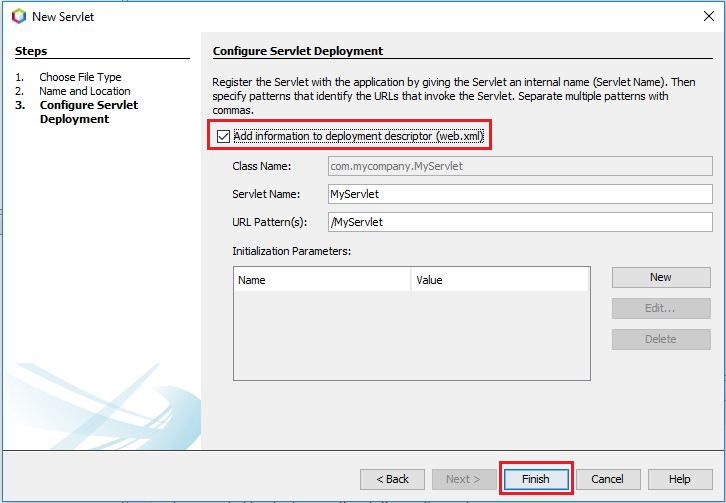
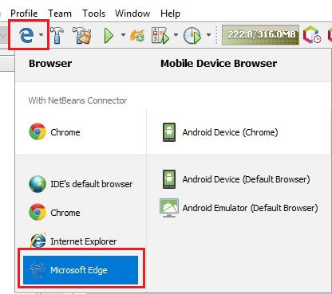

Αν και μπορεί να ακούγεται παράξενο, τα Java Servlets
ήταν η πρώτη προσπάθεια για να παράγουμε δυναμικές
Java Web εφαρμογές. Η έκδοση 3.0, που ήταν μέρος του
Java EE 6, έδωσε μια καινούργια νοοτροπία στο πως χτίζουμε
μια Java Web εφαρμογή.
Αν και είναι κάπως δύσκολο να χτιστεί μια ολόκληρη
ιστοσελίδα μόνο με Servlets, η χρήση τους στο
MVC μοντέλο ήταν πολύ συχνή αφού είχαν και έχουν
τον ρόλο του Controller.
Βασικά ακόμα και σήμερα τα Servlets είναι η
βάση για όλες τις Java EE εφαρμογές. Web frameworks,
όπως JSP (Java Server Pages) και JSF (Java Server Faces),
στην πραγματικότητα γίνονται compile σε Java Servlets για
να μπορούν να εκτελεστούν σωστά στο Web Container του Application Server.
Δεν θα εμβαθύνουμε πολύ στα Servlets αν και είναι πολύ χρήσιμα,
στα σίγουρα όμως θα μάθουμε αρκετά πράγματα έτσι ώστε να
μπορούμε αργότερα να τα χρησιμοποιήσουμε σαν Clients στις
Enterprise Εφαρμογές που θα δημιουργήσουμε.
Τι είναι λοιπόν τα Servlets? Τα Servlets είναι Java
κλάσεις που ακολουθούν τους κανόνες του Java Servlet
API και έχουν την ικανότητα να απαντούν σε web αιτήματα.
Αν και θεωρητικά μπορούν να ανταποκριθούν σε οποιοδήποτε
είδος αιτήματος, κυρίως χρησιμοποιούνται για να απαντούν
σε http αιτήματα.
Για να μπορεί να εκτελεστεί σωστά ένα Servlet
πρέπει να γίνει deploy σε ένα Web container δηλαδή
σε κάποιον application server όπως Tomcat, Payara, Wildfly κτλ.
Επειδή κάθε Servlet κληρονομεί από το Servlet API, έχει την δυνατότητα
να παρέχει συγκεκριμένα αντικείμενα που προσθέτουν δυνατότητες στην λειτουργία του.
Μερικά από τα αντικείμενα είναι το request, το response, το pageContext
και άλλα. Εμείς απλά θα μείνουμε στα request και response αντικείμενα αφού
με αυτά μπορούμε να εκτελέσουμε αρκετές από τις λειτουργίες που θέλουμε.
Όπως είπαμε και στην αρχή της ενότητας, τα Servlets είναι
στην πραγματικότητα java classes και αυτό σημαίνει ότι
μπορούμε να αναπτύξουμε ότι κώδικα Java θέλουμε μέσα σε
αυτά. Άλλωστε για αυτό και συνηθίζουμε να τα χρησιμοποιούμε
σαν clients σε απλά Web παραδείγματα για να δείξουμε την
λειτουργία μιας απλής εφαρμογής. Μπορούμε να γράψουμε Java
κώδικα, ενώ ταυτόχρονα να δείχνουμε και το αποτέλεσμα στην
οθόνη σε html μορφή.
Ιστορικά, το Servlet 3.1 specification ήταν μέρος του Java EE 7
που ακόμα χρησιμοποιούμε και θα γράφουμε κώδικα σε αυτό
για πολύ καιρό ακόμα. Μέσα σε αυτήν την έκδοση είδαμε
καινούργια χαρακτηριστικά στα Servlets όπως υποστήριξη
του HTTP 1.1, non-blocking ασύγχρονο I/O και πολλά άλλα.
Το καινούργιο Servlet 4.0 specification, το οποίο είναι
μέρος του Java EE 8 φέρνει μαζί του ακόμα καλύτερες
βελτιώσεις όπως request/response mutliplexing, server push,
stream prioritization και άλλα. Κάποιες από αυτές τις βελτιώσεις
συμβαίνουν χωρίς εμείς να μπορούμε να επέμβουμε ενώ κάποιες άλλες
όπως το server push δίνουν στον προγραμματιστή επιπλέον δυνατότητες
να πειραματιστεί.
Για να ξεκινήσουμε να δημιουργήσουμε ένα Servlet, έτσι ώστε να καταλάβουμε
καλύτερα την συμπεριφορά του, πρέπει πρώτα να
δημιουργήσουμε ένα Web Project.
Σαν πρώτο βήμα, πρέπει να ξεκινήσουμε τον Payara
Application Server κάνοντας δεξί κλικ επάνω του
και επιλέγοντας Start.
Έπειτα πηγαίνουμε στο κύριο μενού και επιλέγουμε File → New Project.
Από το εμφανιζόμενο παράθυρο επιλέγουμε Java Web κάτω από την
κατηγορία Java with Ant ενώ από την λίστα των projects επιλέγουμε
Web Application. Πατάμε Next για να συνεχίσουμε στο επόμενο βήμα.
Δίνουμε ένα όνομα στο Web Project και αν
επιθυμούμε επιλέγουμε και το που θα αποθηκευτεί.
Όταν έχουμε αυτά τα στοιχεία πατάμε Next.
Σε αυτό το στάδιο επιλέγουμε τον Application Server στον
οποίο θα γίνει deploy το project μας εφόσον είναι έτοιμο
να το δοκιμάσουμε. Εδώ φαίνονται όλοι οι Application Servers
που είναι δηλωμένοι στο NetBeans. Στην δική μας περίπτωση
επιλέγουμε τον Payara Server. Θα παρατηρήσετε ότι το Java
EE Version αλλάζει αυτόματα σε Java EE 8 Web. Αυτό είναι μια
ρύθμιση του NetBeans για να γνωρίζει την έκδοση του Java
EE framework όταν θα κάνει compile το project σας. Αν
λοιπόν κάνατε και αυτές τις τελευταίες ρυθμίσεις πατήστε
Finish να δημιουργηθεί το Web Project. Δεν είναι ανάγκη
να πατήσετε Next γιατί δεν θέλουμε να επιλέξουμε κάποιο
επιπρόσθετο framework που μπορεί να μας προτείνει το
NetBeans. Όλα τα project μας θα τα δημιουργήσουμε με
μόνο Java EE 8 βιβλιοθήκες.
Τώρα έχουμε την βασική μορφή ενός Project δημιουργημένο
μέσα από το NetBeans. Το project περιέχει ήδη ένα
index.html αρχείο αν θέλετε να σηκώσετε αυτό το project
στον Payara και να δείτε το αποτέλεσμα στον browser.
Ας το κάνουμε αυτό. Κάνετε δεξί κλικ επάνω στο
SimpleServerProject όνομα και επιλέγετε Clean
and Build. Μετά το τέλος αυτής της διαδικασίας
θα δημιουργηθεί ένα αρχείο με κατάληξη war που
βασικά είναι όλο το Web project μας.
Από την στιγμή που έχει δημιουργηθεί το project μας
με κατάληξη war σημαίνει ότι δεν βρέθηκαν λάθη
κατά την διάρκεια του compilation οπότε είμαστε
έτοιμοι για το deploy στον Application Server.
Αυτό γίνεται αν κάνουμε πάλι δεξί κλικ επάνω στο
SimpleServerProject και επιλέξουμε Run. Αυτή η
εντολή κάνει deploy την εφαρμογή μας στον application
server και ταυτόχρονα μας δείχνει την index.html σελίδα
στον browser όπως μας την προσφέρει ο application server.
Τώρα που έχουμε την βασική δομή του project μπορούμε
να δημιουργήσουμε το πρώτο μας Servlet. Κάνουμε
δεξί κλικ επάνω στο Source Packages και δημιουργούμε
ένα δικό μας πακέτο επιλέγοντας New → package και δίνοντας
το όνομα com.mycompany. Όταν τελειώσετε πατήστε Finish.
Τώρα κάνουμε δεξί κλικ επάνω στο δημιουργημένο
πακέτο και επιλέγουμε New → Servlet.
Δίνουμε το όνομα MyServlet, ή όποιο άλλο όνομα θέλετε εσείς, και πατήστε Next.
Τσεκάρετε το Add information to deployment descriptor (web.xml) και πατάτε Finish.

Ενώ έχει ήδη δημιουργηθεί το Servlet παρατηρούμε ότι το αρχείο
είναι κόκκινο. Το NetBeans μας ειδοποιεί με αυτό τον τρόπο
ότι λείπουν κάποιες βιβλιοθήκες από το project μας. Θα πρέπει
λοιπόν να πάμε και να προσθέσουμε τις βιβλιοθήκες του Java EE 8.
Το NetBeans έχει φροντίσει να έχει αυτές τις βιβλιοθήκες έτοιμες για εμάς.
Κάνουμε δεξί κλικ επάνω στο project και επιλέγουμε Properties.
Στο παράθυρο που εμφανίζεται έχουμε να κάνουμε μερικές αλλαγές.
Πάνω από όλα βεβαιωνόμαστε ότι η Java Platform είναι JDK 1.8.
Εάν δεν είναι τότε χρειάζεται να το αλλάξουμε. Έπειτα πατάμε
στο κουμπί Add Library και από την εμφανιζόμενη λίστα επιλέγουμε
Java EE Web 8 API Library.
Δεν κλείνουμε το παράθυρο ακόμα. Πρέπει να ορίσουμε,
ότι όταν ξεκινήσει το Project μας, θα εμφανίζει
το Servlet σαν πρώτη σελίδα και όχι την default index.html.
Για το πετύχουμε αυτό, κάνουμε κλικ στο Run και γράφουμε στο
Relative URL το όνομα του Servlet το οποίο είναι MyServlet.
Έχουμε κάνει όλες τις απαραίτητες αλλαγές οπότε μπορείτε να πατήσετε ΟΚ.
Επειδή το project μας είναι χτισμένο σε Java EE8 είναι
απαραίτητη προϋπόθεση να ενεργοποιήσουμε την ιδιότητα
αυτόματης εύρεσης των αντικειμένων που προσφέρει το Java
EE 8 framework. Αυτό γίνεται προσθέτοντας είναι beans.xml αρχείο στο project.
Ας δούμε λοιπόν τα βήματα που απαιτούνται.
Κάνουμε δεξί κλικ επάνω στο project και επιλέγουμε New → Other.
Από τα Categories επιλέγουμε Contexts and Dependency Injection
και από τα File Types επιλέγουμε beans.xml. Πατάμε Next, και
μετά Finish για να δεχτούμε το όνομα και τον φάκελο μέσα στον
οποίο θα αποθηκευτεί το beans.xml αρχείο.
To Servlet μας είναι έτοιμο. Τώρα μπορούμε να
γράψουμε ένα απλό μήνυμα που θα εμφανίζεται στον
Browser. Υπάρχουν όμως κάποια μικρά θεωρητικά
στοιχεία που πρέπει να αναλύσουμε για να κατανοήσουμε
καλύτερα την λειτουργία του Servlet πριν προχωρήσουμε
στην εγγραφή και εκτέλεση ενός Servlet κώδικα.
Αν κοιτάξουμε λίγο τον κώδικα του Servlet
που δημιουργήσαμε, θα δούμε πως έχουν δημιουργηθεί
δύο μέθοδοι : doGet και doPost που βασικά ανταποκρίνονται
σε GET και POST calls που δέχονται δια μέσου του HTTP
πρωτοκόλλου. Η μέθοδος processRequest είναι ένα δημιούργημα
του wizard του NetBeans για να μας διευκολύνει με τον κώδικα μας.
Στην ουσία το NetBeans έχει δημιουργήσει μια τρίτη μέθοδο
που είτε την doPost καλέσουμε είτε την doGet θα εκτελεστεί
η processRequest. Για τα δικά μας απλά παραδείγματα αυτή
η ευκολία μας εξυπηρετεί αλλά για πιο εξειδικευμένες
περιπτώσεις θα ήταν καλύτερα να γράφατε τον κώδικα μέσα
στην doPost ή στην doGet. Το Servlet μας λοιπόν απόκτησε
την ικανότητα να ακούει σε http καλέσματα λόγω της κληρονομικότητας
από την κλάση HttpServlet (η πρώτη γραμμή της κλάσης μας
είναι public class MyServlet extends HttpServlet) που και
αυτό με την σειρά του κληρονομεί από μια πιο γενική κλάση
που ονομάζεται GenericServlet. Το αποτέλεσμα αυτής της
κληρονομικότητας είναι ότι το Servlet μας μπορεί να
διαχειριστεί HTTP καλέσματα και μπορεί ταυτόχρονα να
περιέχει Java κώδικα.
Τέλος αν προσέξουμε τις μεθόδους, θα παρατηρήσουμε
ότι οι παράμετροι που περνάμε είναι είδος HttpServletRequest
και HttpServletResponse. Το HttpServletResponse αντικείμενο
προετοιμάζει την απάντηση έτσι ώστε να την επιστρέψει στον
browser.
Οι HttpServlet μέθοδοι που έχουμε στην διάθεση μας γενικότερα είναι οι εξής:
Ας αλλάξουμε των κώδικα του MyServlet όπως δείχνει το πιο κάτω παράδειγμα.
package com.mycompany;
import java.io.IOException;
import java.io.PrintWriter;
import javax.servlet.ServletException;
import javax.servlet.http.HttpServlet;
import javax.servlet.http.HttpServletRequest;
import javax.servlet.http.HttpServletResponse;
public class MyServlet extends HttpServlet {
protected void processRequest(HttpServletRequest request, HttpServletResponse response)
throws ServletException, IOException {
response.setContentType("text/html;charset=UTF-8");
try (PrintWriter out = response.getWriter()) {
/* TODO output your page here. You may use following sample code. */
out.println("<!DOCTYPE html>");
out.println("<html>");
out.println("<head>");
out.println("<title>Kassapoglou Site</title>");
out.println("</head>");
out.println("<body>");
out.println("<h1>Welcome to Kassapoglou site</h1>");
out.println("<p/>");
out.println("<h1>Free Lessons on Open Source Technologies</h1>");
out.println("</body>");
out.println("</html>");
}
}
@Override
protected void doGet(HttpServletRequest request, HttpServletResponse response)
throws ServletException, IOException {
processRequest(request, response);
}
@Override
protected void doPost(HttpServletRequest request, HttpServletResponse response)
throws ServletException, IOException {
processRequest(request, response);
}
@Override
public String getServletInfo() {
return "Short description";
}// </editor-fold>
}
Μια τελευταία επιλογή πριν τρέξουμε το project είναι
εκείνη του Browser. Πατήστε το εικονίδιο που δείχνει
τους Browser και επιλέξτε έναν μοντέρνο Browser όπως
Edge, Mozilla ή Chrome.

Κάνουμε δεξί κλικ επάνω στο project και επιλέγουμε Run.
Αφού το project γίνει deployed στον application server,
θα ανοίξει ο browser που έχετε επιλέξει και θα εμφανιστεί
το μήνυμα μας.
Αν και μπορεί να χρειάστηκαν αρκετά screenshots για
να περιγράψουμε την διαδικασία δημιουργίας ενός
Web Project, στην πραγματικότητα η διαδικασία παίρνει
1-2 λεπτά και είναι πολύ εύκολη. Από την επόμενη
ενότητα θα θεωρήσω ότι γνωρίζετε την διαδικασία
οπότε δεν θα επαναλάβουμε τα βήματα εκτός και αν
θέλουμε να προσθέσουμε κάποια έξτρα λεπτομέρεια.